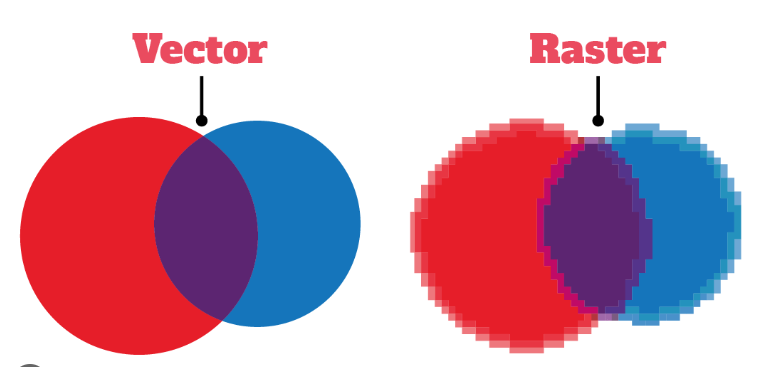

Canvas je oznaka (tag) HTML5 standarda namijenjena crtanju.
Canvas je 2D crtaća platforma unutar web preglednika, a koristi JavaScript i HTML.
Upotrebom JavaScript-a se može pristupiti čitavom setu funkcija za crtanje linija,
pravokutnika, lukova, crta, teksta …
SVG(Scalable Vector Graphics) većinom je manje težine u usporedbi
sa Bitmap rasterskom slikom, koja posjeduje otprilike iste rezoluciju i
grafički prikaz.
Uključivanje SVG-a u HTML dokument omogućava
naknadno stiliziranje grafike putem CSS-a,
ali i manipulaciju JavaScript-om. Tako možemo promijeniti svojstva, kao
što su: boja
pozadine, teksta, okvira, na isti način kao i za bilo koji HTML element.
Zbog toga je omogućeno i animirati sve SVG objekte preko JavaScript
biblioteke kao što je
jQuery.
| CATEGORY | canvas | SVG |
|---|---|---|
| Supporting elements | Bitmap, based on pixels | Vector illustration,based on graphic elements |
| Operation object | Single HTML element | various hraphic ele -ments |
| Driver | JavaScript and other script driven | Script or css driven |
| Mjesec | Ušteda | Ušteda za blagajne |
|---|---|---|
| Siječan | $100 | $50 |
| Veljača | $80 |
Ubacite sljedeću sliku ispod:
